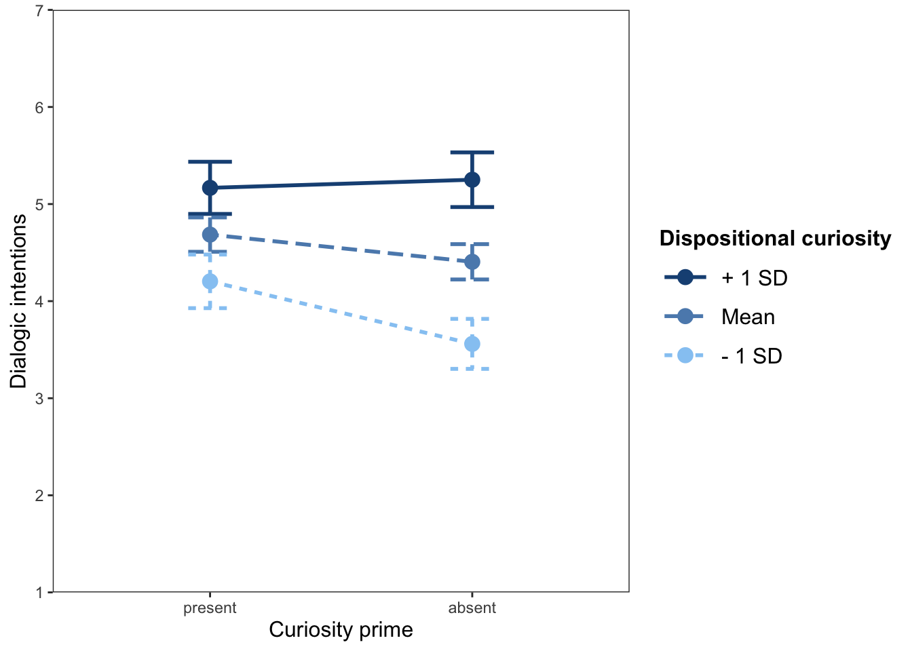

| Characteristic | N = 9991 |
|---|---|
| age | 47 (17) |
| female | |
| Female | 519 (52%) |
| Male | 480 (48%) |
| educ | |
| Less than high school | 32 (3.2%) |
| High school graduate | 255 (26%) |
| Some college | 174 (17%) |
| 2 year degree (e.g., associate degree) | 117 (12%) |
| 4 year college degree (e.g., bachelor's degree) | 233 (23%) |
| Advanced degree (e.g., graduate school, JD, MD, PhD) | 188 (19%) |
| Hispanic | |
| Non-Hispanic | 644 (64%) |
| Hispanic | 355 (36%) |
| Black | |
| Non-Black | 642 (64%) |
| Black | 357 (36%) |
| White | |
| Non-White | 433 (43%) |
| White | 566 (57%) |
| 1 Mean (SD); n (%) | |
Curiosity Project: Qualtrics Data Analysis (April 2026)
Data for this project were collected between May 5-10, 2026, via Qualtrics. The raw data file contained \(1,002\) responses. Of these, \(1,000\) respondents who live in the US consented to participate.
1 Experimental Conditions
The experiment embedded in the online survey has a 2 (curiosity prime: absent/present) \(\times\) 2 (inclusion of resolution: absent/present) between-subjects design (Table 2). Respondents were randomly assigned to experimental conditions.
| Characteristic | N = 1,0001 |
|---|---|
| All experimental conditions | |
| No curiosity, Resolution | 262 (26%) |
| No curiosity, No resolution | 231 (23%) |
| Curiosity, Resolution | 251 (25%) |
| Curiosity, No resolution | 256 (26%) |
| Curiosity conditions | |
| No curiosity | 493 (49%) |
| Curiosity | 507 (51%) |
| Resolution conditions | |
| No resolution | 487 (49%) |
| Resolution | 513 (51%) |
| 1 n (%) | |
2 Dependent Variable Sets
We also split the sample randomly into separate variables.
| DVset | No curiosity, Resolution | No curiosity, No resolution | Curiosity, Resolution | Curiosity, No resolution |
|---|---|---|---|---|
| DV set 1: Info Seeking | 135 | 113 | 115 | 134 |
| DV set 2: Risks/Benefits, Support | 127 | 118 | 136 | 122 |
3 Data Analysis for Special Issue of the ANNALS of the AAPSS
| Curiosity | Frustation | Dialogue | |
|---|---|---|---|
| (Intercept) | 2.36 *** (0.24) | 1.34 *** (0.39) | -2.06 *** (0.39) |
| Curiosity prime (present) | -0.15 (0.12) | -0.03 (0.18) | 1.66 *** (0.42) |
| Resolution (present) | -0.09 (0.12) | -0.13 (0.17) | 0.53 (0.42) |
| Frustration | 0.01 (0.03) | 0.21 *** (0.03) | |
| Trait curiosity | 0.60 *** (0.04) | 0.20 ** (0.07) | 0.60 *** (0.07) |
| Situational curiosity | 0.02 (0.07) | 0.50 *** (0.04) | |
| Curiosity prime (present) × Trait curiosity | -0.26 *** (0.08) | ||
| Resolution (present) × Trait curiosity | -0.10 (0.08) | ||
| N | 497 | 497 | 497 |
| Adj. R-squared | 0.30 | 0.02 | 0.58 |
| F | 53.43 | 2.95 | 97.70 |
| df | 4.00 | 4.00 | 7.00 |
| p | 0.00 | 0.02 | 0.00 |
| *** p < 0.001; ** p < 0.01; * p < 0.05. | |||
